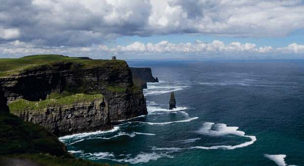

Guinness Storehouse, Dublin

The Guinness Storehouse at St James's Gate introduces visitors to the history of one of Dublin's best-known products. Its multi-storey exhibition explores the ingredients, brewing process and cultural history, ending with city views from the Gravity Bar.
Annual Number of Visitors: 1,711,281
Cliffs of Moher, Co. Clare

The Cliffs of Moher rise above the Atlantic on Ireland's western coast. Part of the Wild Atlantic Way, the cliffs attract visitors for their panoramic views, dramatic geology and seabird colonies, including puffins and guillemots.
Annual Number of Visitors: 1,527,000
Dublin Zoo

Situated in Phoenix Park, Dublin Zoo offers a chance to learn about animals and their habitats. The zoo participates in conservation programmes and contains themed areas that recreate environments from around the world.
Annual Number of Visitors: 1,264,300
National Aquatic Centre, Dublin

The National Aquatic Centre is in Blanchardstown, Dublin. It combines competition swimming facilities with activities for visitors and families, and it has welcomed athletes and teams for international training and events.
Annual Number of Visitors: 1,099,756
Book of Kells Exhibition, Trinity College, Dublin
The Book of Kells is a beautifully decorated medieval manuscript associated with the four Gospels. Trinity College Dublin presents the work to visitors alongside exhibitions about its history and craftsmanship.
Annual Number of Visitors: 983,410